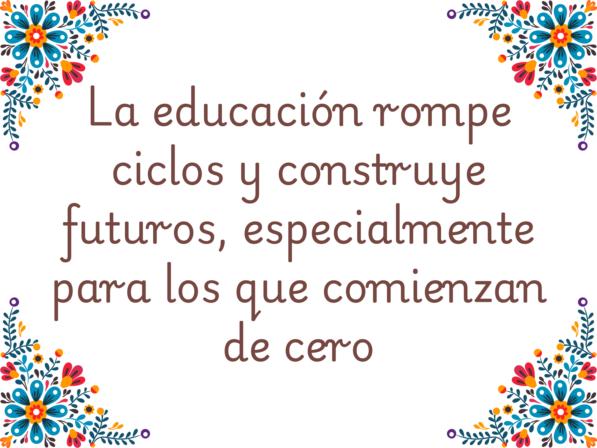

About Me
Background
My name is Jimena Ojeda, and I am a student at Texas Christian University. I am currently pursuing a degree in Liberal Arts. As a first-generation student, I see a lot of myself in the stories of Chicana activists who fought to create spaces where their voices mattered. Like them, I’ve had to navigate between two worlds—honoring my family’s culture and expectations while pushing forward in spaces that were not always welcoming to people like us.
The book is a crucial addition to Chicana feminist history, shining a light on women who often found themselves at crossroads of racial and gender struggles. The review evaluates Chicana Liberation by examining Chávez’s approach, her success in capturing women’s history, and her book’s contribution to the historiography of Mexican American political activism. Chávez employs a rich, intersectional approach that weaves together oral histories, archival sources, and feminist theory to reconstruct the experiences of Chicana activists. She does this by amplifying personal narratives and ensures that these women are often marginalized in traditional political histories.

Web Development Course
In this course, I learned that web development is more than just creating visually appealing pages—it’s about building user-friendly and accessible content that communicates effectively. I gained an understanding of how structure, design, and functionality all work together to create a positive user experience. I also learned the importance of responsive design so that content looks good and works well on different devices.
Explaination
I chose this topic to transform from academic writing to a web format because the history of Chicana activism and “bridging activism” remains largely unknown outside academic circles. Moving it to the web makes the content more accessible, engaging, and digestible for a broader audience. This transformation allows the powerful stories of Chicana leaders, their intersectional struggles, and contributions to social justice to reach people who might not encounter this history in traditional scholarly work. By adapting it for the web, I can highlight the relevance of these activists’ efforts to today’s conversations about gender, race, and equity.
Contact Me
Email: j.ojeda@tcu.edu
Phone Number: 682-402-8546